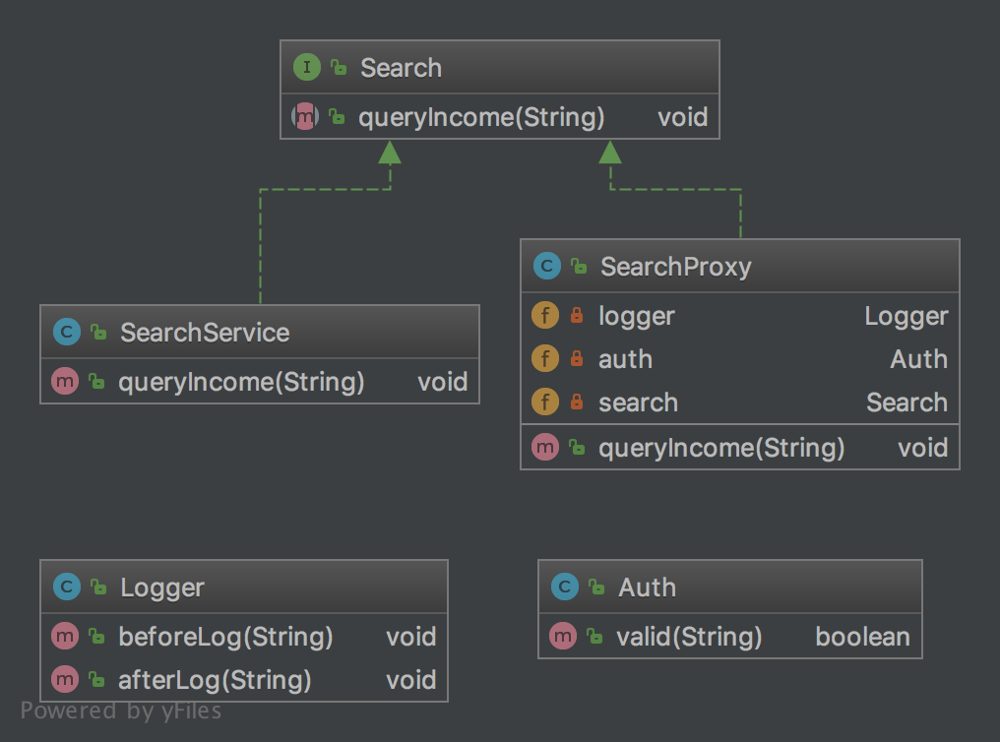

设计模式学习之代理模式
说明
代理模式是设计模式中使用频率非常的高的模式，像日常生活中的房产中介、外卖平台都属于代理。代理模式就是在访问真正的业务之时不会直接与真正的业务进行调用，而是与一个与真正业务对象有着相同功能声明的代理来进行处理，但是最终的处理还是由真正的业务类来进行（决定），比如房产中介，他们会帮助找房者根据条件来对可选房屋进行筛选，但是最终订与不订的权利还是由找房者来决定。常见的代理有保护代理、虚拟代理、远程代理。
代理模式
我们常用的后台系统一般会根据用户权限的不同对用户展示不同的业务菜单，拥有高权限的人会展示相对多的菜单进行操作，在这个过程中还要记录用户的操作日志，用户点了什么，执行了什么操作都需要进行记录，达到有据可查。在这个业务场景下，就可以使用代理模式进行实现。代理对象会持有一个真正业务对象的实例，在代理对象中还引用日志服务与权限服务，所有的请求都经过这个代理类来进行，这样就可以根据操作的用户的状态来进行相应的处理了。具体的代码实现如下：
- 定义一个查询接口，在这里定义一个查询用户收的方法，如下:
package cn.imcompany.proxy;
/**
* Created by tomyli on 2018/6/28.
* Github: https://github.com/peng051410
*/
public interface Search {
void queryIncome(String username);
}
- 再定义一个实现该接口的具体业务类：
package cn.imcompany.proxy;
/**
* Created by tomyli on 2018/6/28.
* Github: https://github.com/peng051410
*/
public class SearchService implements Search {
@Override
public void queryIncome(String username) {
System.out.println(username + "开始查询");
try {
Thread.sleep(1000);
} catch (InterruptedException e) {
e.printStackTrace();
}
System.out.println(username + "查询完成");
}
}
在上面代码中就实现了查询收入的方法，简单的打印了两行日志。
- 由于在实现需要对权限进行控制并记录日志，则先把需要用来的权限类与日志类进行定义与实现。实现代码如下:
package cn.imcompany.proxy;
/**
* Created by tomyli on 2018/6/28.
* Github: https://github.com/peng051410
*/
public class Auth {
public boolean valid(String username) {
return "admin".equals(username);
}
}
public class Logger {
public void beforeLog(String username) {
System.out.println("开始记录" + username + "查询日志");
}
public void afterLog(String username) {
System.out.println("结束记录" + username + "查询日志");
}
}
- 最后来进行代理类的实现，代理类通常也会实现查询接口，这样在调用者看来它与真正的业务类没有什么区别，实现代码如下：
package cn.imcompany.proxy;
/**
* Created by tomyli on 2018/6/28.
* Github: https://github.com/peng051410
*/
public class SearchProxy implements Search {
private Logger logger = new Logger();
private Auth auth = new Auth();
private Search search = new SearchService();
@Override
public void queryIncome(String username) {
logger.beforeLog(username);
if (auth.valid(username)) {
search.queryIncome(username);
}
logger.afterLog(username);
}
}
在上面的代理中，它维护了权限与日志这两个工具类的实例，还维护真正提供查询的业务类实例，在实现的查询收入接口中，先进行进入日志的记录，再验证用户的权限，验证通过则调用真正的业务类来查询收入，最后记录结束的日志，一次调用处理完成。 上面实现的类图如下：  主要的核心都在代理类中，它对整个的流程进行全面的控制，对真正的业务方法进行了保护，只有满足条件的请求才可以被处理。
评论
Comments powered by Disqus